Financial freedom · Part 3
Chapter 8: How to ask for a raise—or find a new job
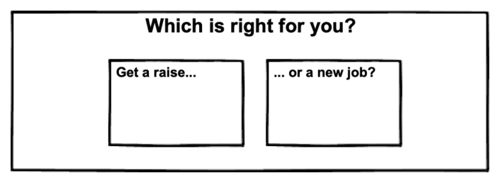
The two fastest (and most uncomfortable) ways to increase your income
If you want to increase your income, your two best bets are to ask for a raise or find a higher-paying job.
Neither are easy. Or comfortable. Yet both can make you over $10,000 a year, with just a few emails and conversations.
But which is right for you?
I suggest both. It allows you to capture the upside (of increasing your income) with zero downside, an approach known as an asynchronous bet.
In this chapter, we'll discuss how to effectively ask for a raise while testing the waters for higher-paying work.
Keep reading, or click a link below to skip ahead:
Why you should regularly apply to jobs (even if you're not really looking)
Even if you love your current job, make it a habit to interview for a job every 6 months.
By interviewing frequently, you'll enjoy four benefits.
- You sharpen your interview skills, so you'll be ready to rock when your dream job is on the line.
- You discover what the job market wants—and how much they're willing to pay.
- You negotiate pay more aggressively, knowing that you can always walk away (which is the best position to be in any negotiation).
- You may stumble on an exciting new job that you never would've seen coming (or, alternatively, you realize how good you've got it at your current gig).
The last point is especially important. The average raise in the US is 3–5% per year according to an annual survey from Aon, yet many people (myself included) see an increase in pay from 20–100% with a new job. And according to Brian Kropp, vice president at research firm Gartner, the average raise for a worker who transitions to a new job is about 15 percent. “You’re never going to get that 15 percent by staying at your current job,” he tells CNBC Make It. “That’s just not going to happen.”
How to find job openings—a simple approach that really works
I'm terrible at networking. And social media. And attending events.
Sure, these may work for some—but it feels awfully far away from our desired result: a job offer (or interview at the least).
So what to do instead?
Simply visit websites you currently use.
I'm serious. If you enjoy what a company is doing, you'll likely enjoy working for them. This is how I got a job at Google; my wife asked me "What do you want to do?" and all I said was "I dunno... maybe work at Google?" Two months later, I was working at the Googleplex, stuffing myself full of free doughnuts and cheeseburgers.
The lesson? Focus on companies you admire, not random job openings. Your passion and dedication will shine through when you speak with them.
Sites to help you find job openings
In addition, you can also use the following sites: Glassdoor, FlexJobs (for remote and freelance work), Indeed, Monster, and CareerBuilder.
One last option is LinkedIn; you can share your career interests with recruiters, who contact you with opportunities. And if you're worried about your boss finding out, relax: LinkedIn has reported that it "takes steps to prevent recruiters who work at your company and related companies from seeing the career interests that you share."
Whatever sites or approaches you use, remember: focus on companies you want to work for, rather than individual openings. Put simply: a good position with a great team beats a perfect position with a shitty team.
When looking for new jobs, don't forget these other benefits
New jobs aren't just about a pay increase. In addition to "mo' money" consider the following benefits:
- A better company reputation. This was a big reason why I took on a role at Google. That name-recognition alone was enough to get me in the door for interviews even a decade later.
- A better group of people. Will you learn from your new coworkers? Are they hungry, motivated go-getters, or happy with the status quo?
- A better title. If you're looking to go the managerial route, you'll need to "make the leap" into management at some point. Becoming an executive at a smaller company can help you become an executive at a larger company much faster than climbing the ranks with your existing company.
- A better quality of life. Does your new employer let you work remotely? Offer less of a commute, or an exciting new location? Do they offer free meals, access to a gym—or intramural Twister?
Worried about being labeled a "job hopper"?
Don't be.
If you've moved from job to job, a new employer may wonder if you have commitment issues.
Here's what they'll ask—and how to respond and look like a pro.
If your interviewer asks: "Why did you leave your last company after 7 months?"
You answer: "Frankly, I saw an amazing opportunity to further develop my skills, and take on new responsibilities. This position really caught my eye because I wanted to work on [relevant topic], improve my [relevant skill], and I could really provide value on [relevant project]."
Why this answer works: You mentioned highly relevant projects and your desire to grow your skills. What you didn't mention is money, which positions you come as a go-getter—rather than a gold-digger.
No that we've covered the benefits of interviewing—and hopefully, finding—new work, let's talk about getting a raise.
Raises: How (and when) to ask
Ask when you start a new project.
Ask when you get a big win.
Ask early—and often.
Ask.
Remember: It is not your employer's job to make you rich. If you don't ask for raises, early and often, they won't offer them to you. To paraphrase hockey great Wayne Gretzky: you miss 100% of the raises you don't ask for.
And those early raises are worth a hell of a lot more than you might think.
How much?
Well, in an interview with NPR, Linda Babcock of Carnegie Mellon University advised: "I tell my graduate students that by not negotiating their job at the beginning of their career, they're leaving anywhere between $1 million and $1.5 million on the table in lost earnings over their lifetime."
Before you ask for a raise, do the following
- Find out your worth. Use the Bureau of Labor Statistics (a source cited throughout this course). The BLS will show you the salary ranges for your position, including the 25th, 50th, 75th, and 90th percentiles, and you can also filter by location and industry (e.g. a software developer for Big Pharma will make more than a developer for a non-profit). Payscale's Salary Reports are another valuable resource.
- Check your company's financials. Your mileage will vary with this; obviously, if you're an accountant, you'll enjoy greater access than if you're a janitor. Regardless, do what you can. Look at your company's overall revenue and profits, your specific department's margins (if applicable), and, if possible, an estimate of what other people are getting paid. Even if you have zero numbers to work with, look around: is the company currently hiring, or laying people off? If they're hiring, it could be a good time to ask for a raise—and more responsibility.
- Determine how much you can reasonably get. In step 1, you learned the going market rate; in step 2, you found out if your employer has the money to pay the market rate (or better). Be honest with yourself: are you are in the 90th percentile? If so, can your company afford to pay you at that rate? Remember, you are entering a negotiation; be prepared.
- Consider other benefits besides pay. Based on step 3, you may realize your company can reasonably offer you a 5–10% raise, but not more. Armed with this insight, you can also negotiate for better benefits, a new title (which will help when apply for other jobs), the option to work from home a few days a week, or perhaps a chance to work on a fun project with your favorite coworkers. Each of these show you're not just in it for the money; you're trying to make the best for everyone.
- Find out when your company reviews compensation. Some employers are only able to offer raises during these times; ask someone in HR when this is.
- Score a big win. Make sure you succeed at something, whether it's landing a new client, delivering a large report, or wrapping up a large project—and make sure your boss knows about it. This will help you "set the stage."
Scoring a big win is ideal, but can be tough to plan for. Next, we'll review ways to get those wins and boost your perceived value to your employer.
How to increase your value, so you can get paid for it
Value is not a function of time. Your pay represents your value, not how many years you've been there.
Consider the following example. Let's say you're the boss and that you're reviewing two employees: Clarence and Alabama.
Clarence has been a proven, dedicated worker. Over the past 20 years, he has always met expectations; as a result, he's enjoyed regular annual raises like clockwork.
Alabama's been on the job for only 2 years. But during that time she acquired numerous certifications, helped grow sales by 12%, and took on three new responsibilities (mainly due to streamlining her other responsibilities, which freed up her time to work on other things).
Looking at Clarence and Alabama's track record, it's obvious that Alabama is providing more value. Yet, strangely, Clarence makes more money than Alabama, simply because he's been around longer.
OK, let's go one step further. Imagine you had to fire one of them. Who would you pick?
I'd fire Clarence. In fact, I'd go so far as to argue that the company is actually losing money by keeping him, when you could you just as easily hire someone new for a fraction of his salary.
That sounds harsh, I know. But it goes back to the notion of value. And if you're going to get those promotions and raises, you need to demonstrate value, not just time with the company. Companies don't pay for time; they pay for value.
Therefore, a healthy way to think about your raise is ask yourself: "For every dollar I'm asking for, how can I demonstrate it will make my employer $4?". Asking yourself this question forces you to think of terms of value; it will also prevent you from wasting time on things that don't matter.
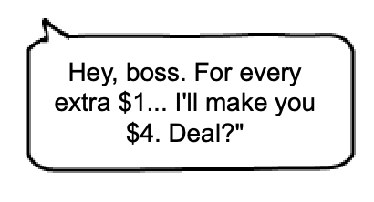
The following process ensures you are working on what matters most, and that your employer will recognize you for your results.
First, agree on the goal. When it comes time to request your raise, you'll want to demonstrate value and the easiest way to demonstrate value is having a scoreboard to point to when you win. (It's a big reason why I like consulting so much; from the very beginning of a project, you agree on how to measure success. This removes any uncertainty down the line—and the issues that go with it.) Make the goal measurable—for example, "increase X by 10%"—rather than some bullshit phrase like "facilitate effective communications among team members...".
But what if your work isn't so easily measured? Sit down you with your boss, and make a simple list like this:
| Meets expectations | Exceeds expectations |
|---|---|
Go through the above with your boss. Fill it out together and make sure you both agree on each item. This will make it easy to prove your worth when it comes time to ask for your raise.
Second, go through each of the items in the table and see where you can improve it in some way. You could streamline a process so it runs smoother, automate a task to save time, or improve a process that increases sales (or whatever). Put together a plan on how to accomplish this and show it to your boss. Again, involve them through this process! You do not want to work on something just to find out your boss didn't care. You need their buy-in early and often. And if they don't like your ideas, that's fine; at the very least they'll see that you're motivated.
Third, hit each of the targets from the table above. Just look at the table above, and make sure you're hitting each and every one of those targets. The first column justifies not firing you; the second column justifies your raise and promotions. Hit each hard.
Use numbers wherever possible. For example:
- Edited 5–7 articles per week
- Spoke with 17 customers per week
- Managed a budget exceeding $700,000—and reduced costs by 10%
- Reworked process and reduced delivery times by 5 hours per week
At this point, you've identified where (and how) to provide value, got your boss to agree, and can now clearly demonstrate the value you've provided. Now that you have your employers' buy-in and a scoreboard with tangible results, you're ready to ask for a raise.
Schedule a time to talk (after you got a big win)
Ask your boss for 30 minutes to discuss your progress. Don't say "Hey, I wanna ask you for mo' money, how's Tuesday?"
Try this instead: "Hi, Now that we've [insert big win here], I was hoping we could revisit my role with the company. I've got several ideas I'd like to discuss with you. Does Tuesday or Wednesday from 9-9:30 am work better for you?"
Let's unwrap the above to see why it works:
For one thing, you've started a paper trail. This makes it easy to know when to revisit asking for another raise.
Similarly, you've reiterated your recent win. This subtly primes your employer to think positively about you. You don't want them thinking about anything but basking in the afterglow of your success.
Lastly, you've scheduled the call for early in the day. There are two benefits.
First, you won't have to worry about this conversation all day. It's the most important thing you could do today; why delay?
Second, studies show people are more open-minded, attentive, and compassionate in the mornings or after a break.. For example, in a study published in the National Academy of Sciences, judges are more likely to grant prisoners parole early in the day or after a break such as lunch. As one of the study's co-authors, Jonathan Levav, associate professor of business at Columbia University, said: "You are anywhere between two and six times as likely to be released if you're one of the first three prisoners considered versus the last three prisoners considered." Therefore, ask your boss when they're in the best mental state: first thing in the morning, or right after lunch.
Lastly, you've already got your first "yes." Studies show that you can build on these initial agreements, and walk people up the "yes ladder."
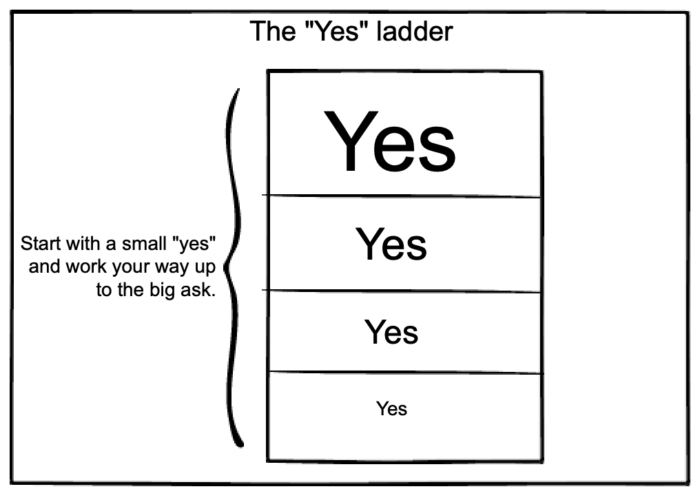
Use this simple 3-step strategy to win your raise (and breeze through other tough conversations)
For most difficult discussions, I use a simple 3-part approach. I call it "Past/Present/Future." Riveting, right? But stay with me, because this is important.
Here's how it works: In any tough talk you simply explain (i) what happened (Past), (ii) what's happening (Present), and (iii) what will happen next (Future).
Let's look at a few examples.
- For an upset spouse: "Look, I know you asked me to take Junior to school today, and that I totally blew it off so we could watch Ice Road Truckers. (Past.) So I'm glad we're talking about this now, and that you let me know how you feel. (Present.) And I promise you, going forward, I'll always bring Junior to school as promised." (Future.)
- For an annoying neighbor: "Hi there, Mr. BarkyPants. Yes, I know it's 1:30am, and that I've just rung your doorbell. You see, for the past week your little kick-dog has been barking in the middle of the night, and it has woken me and my spouse up every night. (Past.) In fact, if you listen closely, you can hear that high-pitched yapping right now. (Present.) May I suggest that, going forward, you keep little Cujo inside during the evenings?" (Future.)
As you can see, this approach works. Now let's get you your raise.
Step 1: Past
In this step you need to demonstrate your current value, based on your past achievements. You also need to show how your current pay doesn't match your current worth. In other words: what you were hired to do, versus what you're actually doing. You're getting paid based on what you were hired to do, NOT what you're doing now.
So you start with this:
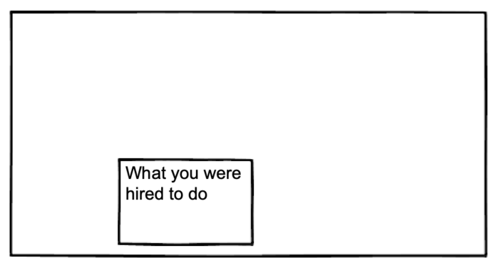
In the above, you highlight what you were hired to do. This is important. Rather than ask for a raise right away, show your boss your original job description and highlight everything else you do. (If you're like most people, what you actually do is very different than what you were hired for.)
Step 2: Present
In step 1 you talked about what you were hired to do; now, in step 2, you play up all the other stuff you've done. Like so:
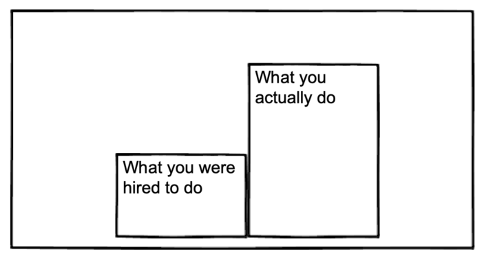
This approach demonstrates your current value. It sets a strong foundation that your employer will agree with, since they've already gone through the table with you. It also shows that you're already at a more senior level—and should be paid accordingly.
Remember this?
| Meets expectations | Exceeds expectations |
|---|---|
Go through each item and explain how you've met—and exceeded—expectations. (Ideally, you've already gone through this with your boss. If not, now is a good time to show it to them.)
Step 3: Future
Of course, you need to back up the "senior role" with data. Use the BLS or PayScale to show what someone earns based on what you're currently doing (and not what you've been hired for). This proves each of your claims and builds momentum.
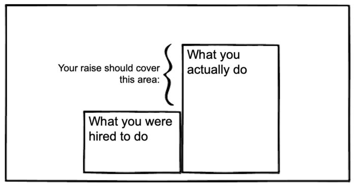
Say the following: "Going forward, I'd like three things: a 11% pay increase, the ability to work from home full-time, and a performance bonus if I also achieve X, Y, and Z."
There are two important tactics used.
First, notice how you're asking for three things rather than one. This really opens up the negotiating table because your employer can choose 1–3 items to counter on. And the best is, each of those items are negotiable as well. This approach opens you up to lots of opportunities, opportunities you may not have realized was possible until you ask. For example, some companies are very open to remote work; others aren't. So it pays to ask. (We'll cover the different types of things you can ask for in just a moment.)
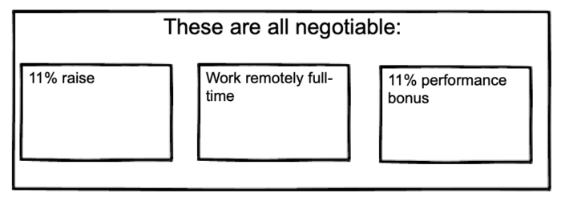
Second, you're including specific numbers (11%, "full-time"). This shows your boss you've done your homework and know exactly what you want. With each number, you put your foot on the ground and say "This is exactly what I want"—which works a hell of a lot better than "Can I have a raise please?"
In addition "knowing your worth", using specific numbers allow you to negotiate the amount of the raise, rather than if you get a raise. This immediately moves the conversation from "Should you get a raise? Yes or no" to "How much of a raise should you get: X or Y." In other words, this approach removes the "non-raise" option from the table.
To illustrate, do this:
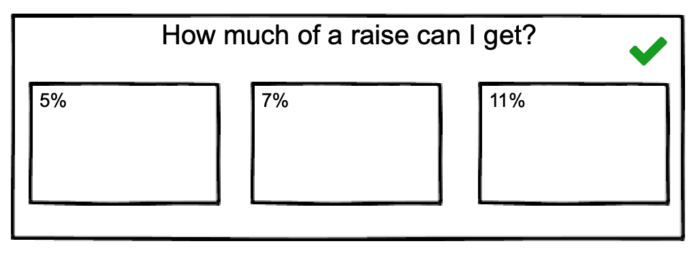
... instead of this:
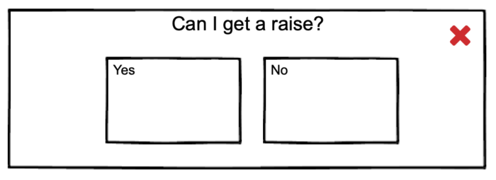
Putting the three steps together
Your final pitch should look something like this:
- "When I was first hired, I did A, B, and C. In fact, I still do. Now, I also do D, E, and F. It's been great to sharpen my skills. In fact, looking at the average salary for this role, I saw that the average pay is $[number], and people in the top 75% earn $[number], which is a heck of a lot more than what I'm being paid. Now, I'd like three things: a 11% pay increase, the ability to work from home full-time, and a performance bonus if I also achieve X, Y, and Z. Does that sound like a plan?"*
Pro tip: Once you've asked, the single most important thing is to shut up. Seriously. Just ask—and shut up. Don't muck it up yammering on; say your piece, then leave it in their court.
And please remember to ask for more than just a raise in pay! Below are some ideas to consider.
Use these different types of raises to get what you really want
You can, of course, ask for a straight-up increase in salary. This is the most straightforward. However, you can also negotiate performance-based incentives (which I prefer).
Performance-based incentives are a win/win. Your employer rests easy knowing that they'll only shell out more cash if you deliver the goods. And you now have a great reason to deliver results; this makes it harder to become complacent. (Or, as they say in Office Space: "It's not that I'm lazy, it's that I just don't care... My only real motivation is not to be hassled; that, and the fear of losing my job. But you know, Bob, that will only make someone work just hard enough not to get fired.")
In addition to higher pay, other perks include:
- More vacation time
- Better benefits
- Bonuses
- Working from home (part-time or full-time)
- Working with higher-level coworkers
- Get seen by the leadership team more
- Tuition reimbursement
- Transportation stipend
- Less stress
- Personal development
- Mentorship
- Feeling proud about what you do
- Getting recognized for your great work
You may not view all of the above as "benefits." I certainly don't. But I list them here to be thorough, and because each is perceived as a benefit to someone—even if that someone isn't you.
The pain points your employer worries about—and how to use them to your advantage
Your boss stands to lose a LOT if you leave. Smart companies get this and devote crazy amounts of time hiring and retaining top talent. Losing that top talent incurs tremendous costs. These costs include both the time and expense of recruiting, interviewing, and training new hires, a process that can take up to 6 months or more.
With that in mind, put yourself in your employer's shoes: If you had a choice between spending the time and money to recruit, interview, hire, and train a new employee—in the hopes to get them up to speed in six months from now—versus paying your current, dependable employee a tad bit more, which would you choose?
Of course, it's not always so cut-and-dry. Some companies simply cannot afford to offer raises; if anything, they're looking to trim the fat with layoffs or reduced hours. If you find yourself working for a company like this, double down on new job interviews.
Useful scripts
If your boss says no to the raise because they "don't have the budget"
If your boss says no, citing budget, don't give up. Say something along the lines of:
"Thanks for hearing me out. I get that now isn't the time for an increase in pay; how about the other things I asked for, such as working from home and performance-based bonuses? Working from home doesn't require a budget, and a performance-based deal only kicks in if I deliver. Can you work with me on these?"
Rather than taking that first "no" negotiate all three items. So you start from this:
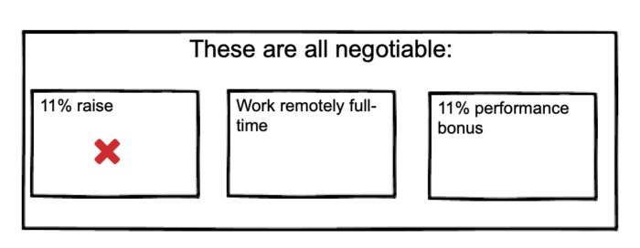
... and negotiate your other two ideas. Who knows? You may "only" walk away with the ability to work remotely 2 days a week, and a 5% performance bonus.
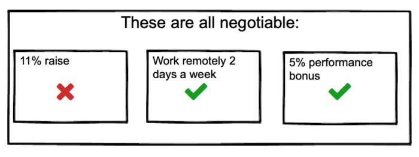
Not bad, huh?
If your boss says no to everything
Say this:
"OK, thanks for talking through this with me. I understand that now isn't the right time, but I'm excited to move up the ladder. When could we revisit this? And most importantly, what can I do to help make this a no-brainer for you?"
This is a two-parter: you're asking what you need to do to earn the raise, and when you'll be able to discuss it again. If your boss doesn't give you clear answers—or pushes it off to some vague date—start looking elsewhere. They're either unable to work with you, or don't care. Either way, you should move on.
If your boss asks for more time
Give them time—up to a week—to get back to you. It's best if they do; chances are, though, they don't.
So after a week of radio silence, email them this:
Hi [BOSS NAME],
*Have you had a chance to look into my raise? *
Let me know if I can help in any way.
Cheers,
NAME
Keep it short and sweet. Anything longer is filler, and comes across as pleading. You've already make your case; now, your employer owes you a response. So keep it short.
Email script to send after your call (performance-based)
Hi [BOSS NAME],
Great call yesterday. I've thought about this further and believe the simplest thing to do would be to offer two performance bonuses to start with.
Performance bonus 1: [INSERT BONUS]
Benefits to [COMPANY], [BOSS] and [YOU]:
- [COMPANY] keeps employees longer, which reduces the need to recruit and train new staff, and existing staff have more experience and are more self-sufficient.
- [BOSS] get more experienced staff, which leads to better projects and results.
- [YOU OR YOUR POSITION] get rewarded for staying with the company longer.
Performance bonus 2: [INSERT BONUS]
Benefits to [COMPANY], [BOSS] and [YOU]:
[COMPANY] keeps employees longer, which reduces the need to recruit and train new staff, and existing staff have more experience and are more self-sufficient.
[BOSS] get more experienced staff, which leads to better projects and results.
*- [YOU] get rewarded for staying with the company longer. *
Let me know if you've other ideas, and when we can discuss these further.
Cheers,
[NAME]